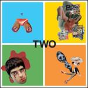
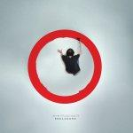
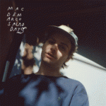
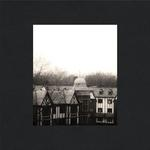

Music Reviews
-
Fear of Men Loom
The Brighton trio's first proper debut proves they've grown as songwriters, channeling those poetic impulses with dramatic verve without lapsing into wretched sentimentality.
Juan Edgardo Rodríguez reviews... -
Nine Black Alps Candy For The Clowns
Nine Black Alps are still operating on the same blueprint with their 5th LP, but the simple science is more refined than ever. This is how grunge sounds in 2014.
Carl Purvis needs to go to A+E... -

Owls Two
Amidst the myriad bands formed from the ashes of emo legends Cap'n Jazz sits one undeniably brilliant achievement: the self-titled Owls record (2001). Twelve years later, Two picks up where Owls left off, an excellent sequel to that album's successes.
Stephen Wragg reviews... -
Protomartyr Under Color of Official Right
The post-punk foursome's latest is a highly compulsive listen that captures the mundanity of their Detroit upbringing with a depraved poetic squalor.
Juan Edgardo Rodríguez reviews... -

John Frusciante Enclosure
RHCP, lo-fi, electronica, singer-songwriter jams--John Frusciante's done it all. With Enclosure, he shows no signs of stopping.
Luiza Lodder is giving this a couple of listens... -

Mac DeMarco Salad Days
The affable Brooklyn-via-Montreal singer-songwriter molts into a more refined, adult-like form of the oddball comic rhythms found in his breakthrough album 2.
Juan Edgardo Rodríguez did let her go once... -

Cloud Nothings Here and Nowhere Else
Proving there was nothing fluke-worthy about their transformation with Attack on Memory, Cloud Nothings return with an album meaner, catchier, and more consistent than anything they've done yet, resulting in a modern indie rock classic.
Peter Quinton totally hearts the 90's, bro... -
Perfect Pussy Say Yes to Love
Syracuse, NY-based noise/screamo band Perfect Pussy make music for the part of your brain that has a lot of things to say but doesn't know how to say them.
Stephen Wragg reviews... -

The Hold Steady Teeth Dreams
Despite the longest wait between two albums in The Hold Steady's discography, Teeth Dreams finds the band at a moment of transition, haunted by but trying to turn away from their legacy.
Forrest Cardamenis reviews... -

Tokyo Police Club Forcefield
The endearing Canadian indie rock trio return after a four year absence with Forcefield, undertaking the challenge of writing simple, effective pop songs with guitars.
Juan Edgardo Rodríguez reviews...